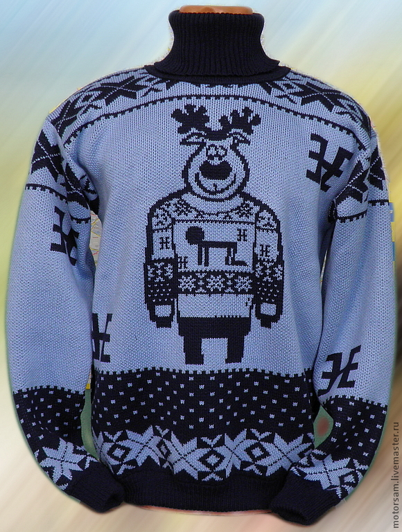
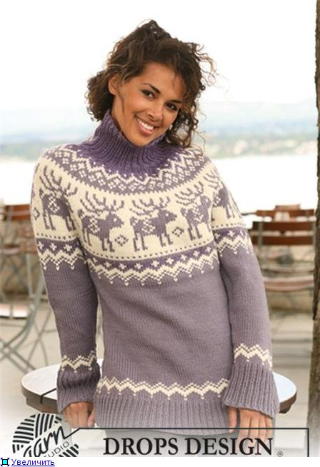
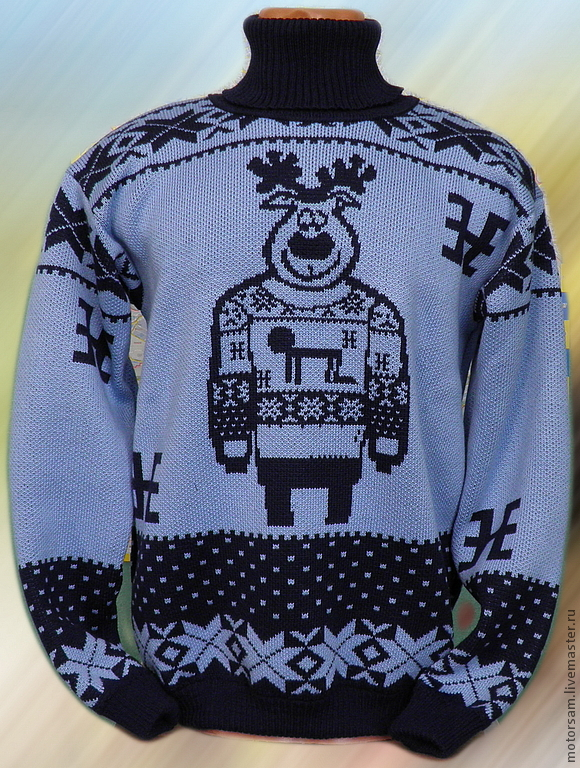
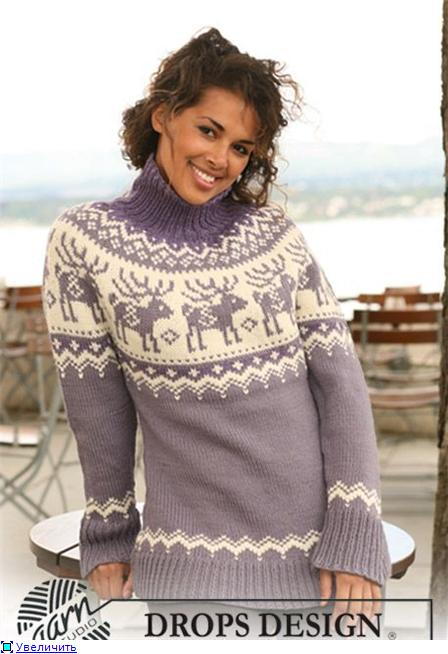
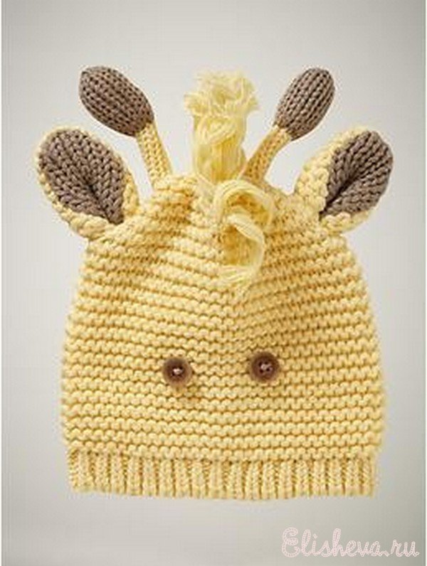
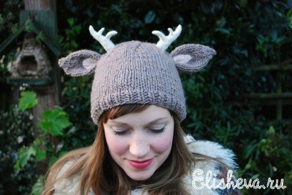

Образ и изображение оленей часто используют в своем творчестве художники, скульпторы, дизайнеры и архитекторы.
В зимнее время года во всем мире очень популярна одежда с оленями. Многие люди ходят в свитерах с олешами, варежках, шарфах. Особенно оригинальные футболках и шапках :) Вязаные свитера теплые, красивые и милые, вызыают зависть тех, у кого еще нет такого свитера.
 
 Шапки. Не каждый день увидишь на улице человека в шапке с оленем :)
 